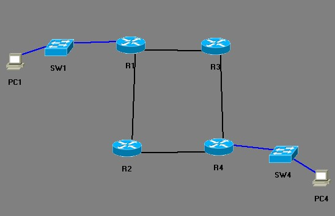

A internet é uma coleção de redes interconectadas, e os pontos de ligação são os roteadores. Estes, por sua vez, estão organizados de forma hierárquica, onde alguns roteadores são utilizados apenas para trocar dados entre grupos de redes controlados pela mesma autoridade administrativa, enquanto outros roteadores fazem também a comunicação entre as autoridades administrativas. A entidade que controla e administra um grupo de redes e roteadores chama se Sistema Autônomo [RFC 1930].
O roteamento é a principal forma utilizada na Internet para a entrega de pacotes de dados entre hosts (equipamentos de rede de uma forma geral, incluindo computadores, roteadores, etc.). O modelo de roteamento utilizado é o do salto-por-salto (hop-by-hop), onde cada roteador que recebe um pacote de dados, abre-o, verifica o endereço de destino no cabeçalho IP, calcula o próximo salto que vai deixar o pacote um passo mais próximo de seu destino e entrega o pacote neste próximo salto. Este processo se repete e assim segue até a entrega do pacote ao seu destinatário. No entanto, para que este funcione, são necessários dois elementos: Tabelas de roteamento e protocolos de roteamento.
Tabelas de roteamento são registros de endereços de destino associados ao número de saltos até ele, podendo conter várias outras informações.
Protocolos de roteamento determinam o conteúdo das tabelas de roteamento, ou seja, são eles que ditam a forma como a tabela é montada e de quais informações ela é composta. Existem dois tipos de algoritmo atualmente em uso pelos protocolos de roteamento: O algoritmo baseado em Vetor de Distância (Distance-Vector Routing Protocols) e o algoritmo baseado no Estado de Enlace (Link State Routing Protocols).
Esses são os tipos de roteamento:
Fazendo uma analogia, o roteamento funciona como um mapa onde as rotas são definidas e o roteador, equipamento responsável por fazer o roteamento, seria como um GPS que seleciona os melhores caminhos disponíveis para que esses dados cheguem da melhor forma ao seu destino.
Para funcionar, o roteador precisa de informações como o endereço de destino e as rotas, que são, muitas vezes, encaminhadas por outros roteadores. Porém, além das diferentes funções dos roteadores, que podem ser usados apenas para trocar dados entre uma rede local, quanto para trocar dados entre outras redes, há ainda algumas diferenças na forma como o roteador transfere um pacote de dados.
Na rota estática, as rotas são definidas manualmente por um administrador da rede, neste tipo de roteamento, as rotas mudam muito lentamente, a depender do administrador da rede.
Na rota dinâmica, o roteador troca informações sobre as rotas com outros roteadores. Neste tipo, os caminhos mudam de acordo com a carga do tráfego ou da topologia da rede. Esse tipo de roteamento, apesar de conseguir mudanças mais rápidas na rota, é mais suscetível a problemas com loops e oscilações.
São as rotas criadas quando colocamos diretamente um IP na interface.
Diferente das pontes, roteadores possuem a capacidade de escolher o melhor caminho para encaminhar o pacote caso existam muitos caminhos que levem ao mesmo destino. Essa escolha obedece a certos critérios. O roteador pode também ouvir o tráfego e determinar quando uma rota está muito congestionada, nesse caso ele escolhe uma rota alternativa para encaminhar o pacote. Considere a figura abaixo:
Observe que saindo de PC1 até chegar a PC4, existem 2 caminhos ou 2 rotas. Quando o pacote chega a R1 com destino a R4, ele tanto pode ser encaminhado por R2 ou R3. Qual rota R1 irá escolher para encaminhar o pacote? O roteador toma essa decisão baseado em certos parâmetros, que constam em sua tabela de roteamento.
Aquela rota que tiver o menor número de saltos será a escolhida. Caso o número de saltos seja igual para as duas situações, então aquela rota com o menor custo (menor distância administrativa) será a escolhida. Tendo por base a figura acima e de posse das informações da tabela, vamos ver qual será a rota escolhida, considerando que as rotas não estejam demasiadamente ocupadas.
Observe que o número de saltos é o mesmo para as duas rotas (2). Para chegar a R4 em qualquer um dos caminhos é preciso passar por 2 roteadores a partir de R1, mas, observe que a distância administrativa indo por R3 é menor do que indo por R2.
Logo o pacote será encaminhado através de R3 e não de R2.
Se as distâncias administrativas fossem as mesmas, os pacotes seriam divididos entre as duas rotas.
Os roteadores podem ser equipamentos externos dedicados com um sistema operacional proprietário como é o caso dos roteadores CISCO por exemplo, ou podem ser serviços que são adicionados a um sistema operacional de rede servidor, tal como o Windows 2000. A diferença entre um e outro está na disponibilidade de recursos, nas situações em que podem ser usados e no custo.
Prefira sempre os roteadores externos, pois eles possuem melhor performance, um sistema operacional proprietário otimizado e uma série de recursos para configuração, monitoração e diagnóstico. O problema desses roteadores é seu custo elevado. Mas para redes pequenas em que custo é uma palavra chave, um servidor como o Windows 2000, fazendo o papel de roteador, apesar de não ter uma série de recursos disponíveis nos equipamentos de fabricantes, daria conta do recado perfeitamente.
O protocolo ARP fornece resolução dinâmica de endereços, que é um mapeamento entre as duas formas de endereçamento distintas: endereços IP, e qualquer outro tipo de endereço usado na camada de enlace. No caso dos quadros Ethernet, a camada de enlace usa o MAC Address (Media Access Control), endereço físico da interface. Permite obter o MAC Addres de uma interface a partir do seu Endereço IP.
Esses são os tipos de mensagens ARP:
Esse são os formados do pacote ARP:
O cachê ARP mantém os mapeamentos de endereços mais recentes de IPs para endereços MAC na memória do host, possuindo um tempo de expiração para dada entrada no cache de alguns minutos a partir do momento em que a entrada foi adicionada. Podemos examinar o cache ARP usando o comando arp /a.
Para limpar o cache ARP, basta usar netsh interface ip delete arpcache ou arp /a /d (ou um IP específico usando arp /d 0.0.0.0). Depois podemos usar netsh interface ip delete destinationcache para excluir o cache de destino.
A captura de pacotes ARP trocados entre dos hosts, é realizada por meio do comando ping, usando o software analisador de pacotes Wireshark.
O ARP Probe são pacotes especiais ARP Request transmitidos em broadcast com o campo SPA (IP do remetente) contendo o valor 0.0.0.0. Utilizado por um host que solicitou um endereço IPv4 de um servidor DHCP, ou após a configuração manual de IP no host, para verificar se o IP atribuído já está em uso na rede.
Existe também o protocolo RARP, que faz o inverso do ARP, associando um endereço lógico ao físico.
Para retornar o catálogo do provedor winsock (o socket que faz o computador interagir com a rede) ao estado inicial, digite na ordem, nbtstat /R, nbtstat /RR e depois netsh winsock reset catalog.
O protocolo ICMP é o protocolo de mensagens da internet, que comunica mensagens de erro, diagnóstico e outras condições que requeiram atenção em uma rede. O protocolo IP, que fornece o mecanismo para entrea de datagramas entre dispositivos, carece dessa funcionalidade, e por isso o ICMP foi criado.
As mensagems ICMP são transmitidas em datagramas IP. Ela contém os campos tipo, código, checksum e conteúdo.
As mensagens ICMP podem ser divididas em duas grandes classes:
Essas são as regras específicas para mensagens, as mensagens ICMP não são geradas:
Alguns tipo de códigos e mensagens:
| Tipo | Código | Descrição |
|---|---|---|
| 0 | 0 | Echo Reply (Resposta de Eco, usado pelo comando Ping) |
| 3 | Destino Inalcançável | |
| 0 | Rede de Destino Inalcançável | |
| 1 | Host de Destino Inalcançável | |
| 2 | Protocolo de Destino Inalcançável | |
| 3 | Porta de Destino Inalcançável | |
| 4 | 0 | Sourche Quench - Controle de Fluxo Elementar |
| 8 | 0 | Echo Request (Requisição de Eco, usado pelo comando Ping) |
| 11 | Tempo Excedido | |
| 0 | TTL Igual à 0 Durante o Trânsito | |
| 1 | TTL Igual à 0 Durante Reconstrução dos Fragmentos |
Mostramos o protocolo ICMP em ação usando os comandos ping e tracert, no prompt, seguido do IP ou domínio.
O TTL é o tempo de vida do pacote, que existe para que ele não fique procurando eternamente um host, iniciando em 255 e vai diminuindo de 1 em 1 (decremento) até achar o host (ele vai de 255 a 0), se ele não achar antes de chegar a 0, ele dará tempo excedido e finalizará sua vida. Isso é usado no Ping e no Traceroute (sendo mais necessário neste último).
O Traceroute é uma ferramenta de diagnóstico que permite ver a rota que datagramas IP seguem quando são enviados de um host ao outro. Faz uso do protocolo ICMP e do campo TTL no cabeçalho IP do datagrama.
O propósito do TTL é evitar que datagramas entrem em um loop de roteamento, quando um datagrama chega à um roteador, seu TTL é decrementado (-1) antes de ser encaminhado. Quando um roteador recebe um datagrama cujo TTL é igual à 0, ele o descarta e envia de volta ao host que o originou uma mensagem ICMP do tipo Tempo Excedido. Essa mensagem contém o endereço IP do roteador como endereço de origem.
Para entendermos o funcionamento do Traceroute, precisamos saber que:
Para trabalharmos com isso, usamos (em Windows), usamos o comando tracert. No Linux substitua por traceroute.
Vamos abrir o prompt, digitando tracert www.google.com.br (ou outro site/IP).
Digitando tracert /? você pode ver outras opções para usar como parâmetros. Por exemplo, podemos usar o parâmetro /h para escolher o número máximo de saltos (cujo padrão é 30), por exemplo: tracert /h 15 www.google.com.br. Ou forçar o uso de IPv4 com o parâmetro /4 ou de IPv6 usando /6.
O programa Ping é um utilitário que permite testar a conectividade entre dois hosts em uma rede. Ele funciona enviando uma mensagem ICMP do tipo Echo Request à um host, e espera o recebimento de uma mensagem ICMP do tipo Echo Reply em retorno (resumindo, ele envia uma mensagem que retornará num espaço de tempo).
No geral, se não conseguirmos "pingar" um host, significa que não há conectivadade entre as máquinas envolvidas no processo. É um dos primeiros passos que tomamos para determinar qual o problema que afeta uma rede onde um ou mais hosts não conseguem se comunicar entre si, ou com a rede externa.
O número de sequência se inicia em 1 e é incrementado cada vez que uma nova mensagem Echo Request é enviada. O Ping então mostra o número de sequência de cada datagrama retornado, de modo que podemos verificar se os pacotes se perderam, estão fora de ordem ou foram duplicados.
Como sabemos, o protocolo IP é um serviço de entrega de datagramas do tipo "melhor esforço", de modo que qualquer uma dessas condições citadas pode vir à ocorrer.
Além de mostrar o número de sequência, quando a mensagem de retorno Echo Reply é recebida, também são mostrados o TTL e o RTT calculado. O Ping calcula o RTT armazenando a hora na qual o pacote Echo Request é enviado na área de dados da mensagem ICMP. Então, quando a resposta Echo Reply é recebida, ele simplesmente subtrai esse valor de hora da hora atual (momento em que o datagrama é recebido). Erros e pacotes também são relatados pelo comando Ping.
Para usarmos ele, usamos o comando ping www.google.com.br (substituindo pelo site/IP desejado).
Digitando ping /? você pode ver outras opções para usar como parâmetros.
Um exemplo de uso seria ping /n 6 www.google.com.br, para enviar seis requisições, ao invés do padrão 4. Outro exemplo seria colocar o parâmetro /t para enviar infinitas requisições no Windows, por exemplo ping /t www.google.com.br. Também podemos forçar o uso de IPv4 com o parâmetro /4 ou de IPv6 usando /6.
PS: O Ping é um comando para iniciar o teste de conectividade, apesar de algumas pessoas errarem, o Ping é apenas o comando, o tempo de milissegundos para o outro dispositivo se chama latência (o tempo máximo de latência deve ser de 45 ms, em média, no Brasil, quanto mais distante maior será a latência, como por exemplo, um servidor nos EUA).
O protocolo TCP (Trasmission Control Protocol) é um protocolo da camada de transporte, que realiza um serviço de entrega de pacotes confiáveis, orientado à conexão.
As principais funções realizadas pelo TCP são:
Veja na ilustração abaixo como funciona o encapsulamento TCP:
Pode ver que o segmento TCP é composto por um cabeçalho TCP (geralmente com 20 bytes, mas pode ter mais), e a área de dados TCP, que é as informações transmitidas (que podem ou não estar vazia). Tudo isso é um segmento TCP, encapsulado num datagrama IP, que também tem seu cabeçalho, da mesma forma.
Veja abaixo a foto da estrutura do cabeçalho TCP:
Essa é a descrição dos campos:
Em resumo: